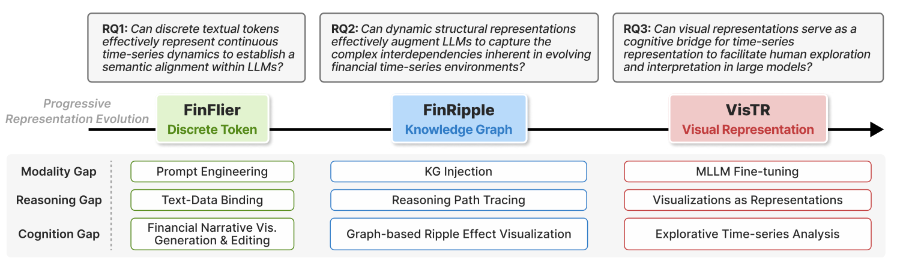
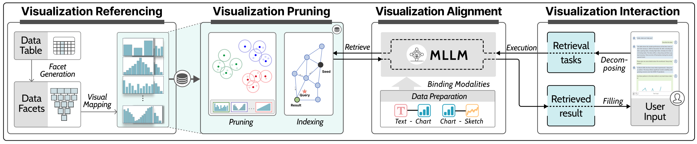

2026年4月10日下午2时至4时，香港科技大学（广州）数据科学与分析学域博士生郝佳凝在校园内顺利通过博士毕业答辩，取得博士学位。郝佳凝同学的博士毕业论文题为《Augmenting Financial Time Series Analysis with Large Models: Progressive Representations from Tokens to Visuals》（利用大模型增强金融时间序列分析：从Token到可视化的渐进式表示）。本次答辩由Prof. James She担任答辩委员会主席，答辩委员会成员包括Prof. Qiong Luo、Prof. Yuyu Luo、Prof. Chao Zhang、Prof. Tony Huang（外部委员）以及Prof. Guang Zhang（联合导师），导师Prof. Wei Zeng出席。
金融时间序列具有非线性、动态性和混沌性等固有特征，仅依靠数值序列难以捕捉市场的复杂变化规律。现实金融市场是一个高度复杂的系统，由多元信息源驱动——突发新闻、政策变动、公司公告等上下文信息直接影响着市场走势。然而，现有的大模型（LLMs/MLLMs）在处理金融时间序列时面临三大核心鸿沟：模态鸿沟（连续的数值数据与离散的Token表示之间存在根本性不匹配）、推理鸿沟（金融实体之间复杂的市场关联结构难以被线性序列捕捉）、以及认知鸿沟（模型输出难以与人类分析师的直觉对齐，阻碍了对结果的理解与解释）。如何弥合这些鸿沟，实现大模型对金融分析的真正增强，成为该研究的核心问题。

为系统性地解决上述问题，郝佳凝同学的博士论文提出了一套渐进式表示框架（Progressive Representation Framework），通过将金融时间序列的表示从离散的Token逐步演进到知识图谱，最终到可视化图表，实现数据、模型与人类分析师之间的无缝衔接。该框架包含三项核心工作：(1) FinFlier（IEEE TVCG 2025）——提出基于Token表示与知识增强的大语言模型方法，实现金融新闻叙事与数据图表的自动叠层（Graphical Overlaying），将传统"文字+表格"的阅读体验升级为直观的可视化叠加，显著提升了金融信息的理解效率；(2) FinRipple（ACL 2025）——构建动态知识图谱表示，将金融市场中公司之间的领导层关系、共同基金持股、专利关系和供应链结构编码为时变知识图谱，并通过知识注入对齐大模型，使其能够感知单一市场事件在关联公司间的"涟漪效应"，在投资组合管理中实现了超越基线的日收益率、夏普比率和最大回撤表现；(3) VisTR（IEEE TVCG 审稿中）——提出以可视化作为表示的方法，将原始时间序列表格转化为一组有意义的可视化参考（Visualization References），通过多模态大模型微调建立图表、文本与用户草图的统一嵌入空间，支持分析师通过自然语言查询和草图绘制进行时间序列模式检索与推理。

在博士期间，郝佳凝同学在可视化、人工智能与金融的交叉领域发表了10篇论文，涵盖IEEE TVCG、ACL、ACL Findings等顶级会议与期刊。上述三项核心工作形成了从Token表示（FinFlier）到知识图谱表示（FinRipple）再到可视化表示（VisTR）的完整研究脉络，系统性地回答了"大模型如何增强金融时间序列分析"这一核心问题。此外，郝佳凝同学还参与构建了金融领域评测基准BizCompass（ACL Findings 2026），为评估大模型在商业知识与应用中的推理能力提供了系统性工具。该渐进式表示框架的核心理念——"大模型应增强而非替代人类分析师"——为金融智能分析的未来发展提供了新的范式思路。


祝贺郝佳凝同学顺利完成博士学业！🎉 郝佳凝同学是港科广CIVAL课题组的第二位博士毕业生，在读期间在"利用大模型增强金融时间序列分析"方向做出了系统性的创新贡献，展现了出色的跨学科研究能力。衷心感谢各位答辩委员在百忙之中参加本次答辩，并提出了宝贵的意见与建议！祝郝佳凝同学未来一切顺利，前程似锦！🎓